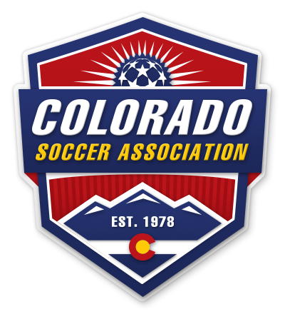
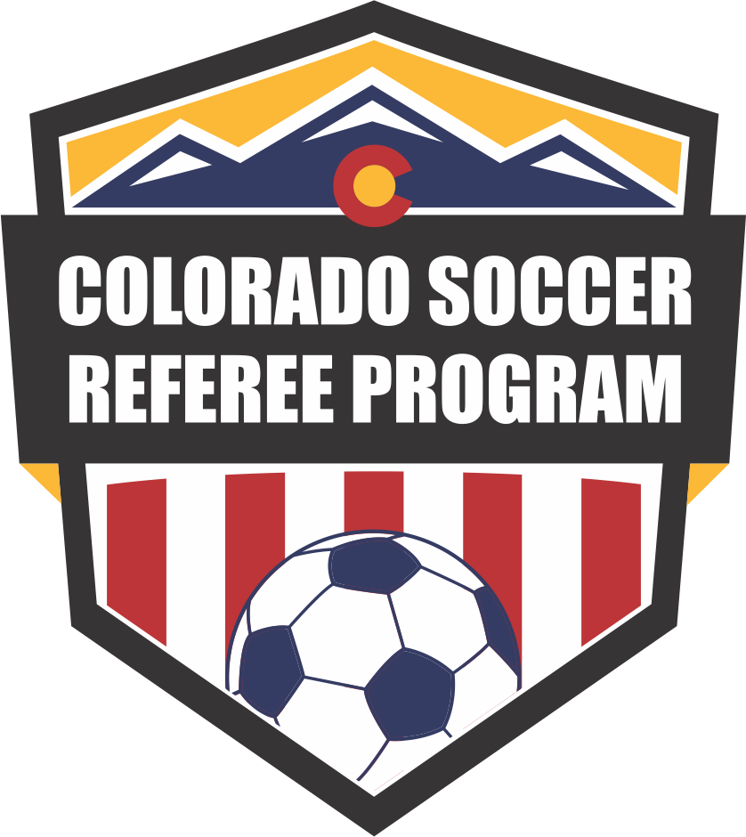

CREST Reference Library
Colorado Soccer Association · Referee Resources
● Free & Offline
🔍
✕
All Modules
📚 CSA Guide
⚖ Laws
⚽ Game Day
📅 Career
🛡 Policy
📞 Contacts
🔍
No modules found. Try a different search or filter.
CSA Guide to Referees 2025/26
17 Laws of the Game
Game Day Procedures
Career Resources
Policies & Safety
CSA Contacts
-
-
-
✕